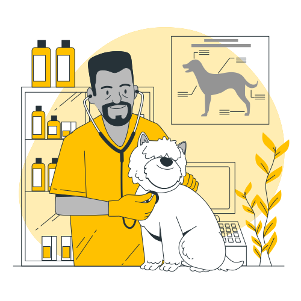

O melhor suporte no cuidado para seu melhor amigo
Aqui, você encontrará respostas para todas as suas dúvidas, desde a escolha da melhor ração até dicas essenciais para garantir o bem-estar do seu companheiro peludo.
Marque sua consulta Conheça nossa clínica!
Cuidado veterinário de qualidade!
Oferecer cuidado veterinário de qualidade vai além do simples atendimento — é entender as necessidades únicas de cada animal e garantir seu bem-estar com carinho e atenção. Nossa equipe dedicada trabalha com profissionais experientes e tecnologia avançada para realizar consultas, exames e tratamentos que promovem a saúde dos pets em todas as fases da vida. A prevenção é nossa prioridade, e por isso orientamos os tutores com informações claras e personalizadas, ajudando a evitar doenças e promover uma vida longa e feliz para os bichinhos. Aqui, cada pet recebe um cuidado especial, porque sabemos que eles são parte da família e merecem o melhor.
- Consultas e exames de rotina
- Vacinação e imunização
- Cirugias e procedimentos veterinarios
- Tratamentos e controles de doença
- Odontologia veterinária
- Atendimento
- Atendimento de emergência 24 horas
- Nutrição e aconselhamento alimentar personalizado
Agendar consulta Como chegar?
Venha conferir nosso petshop e farmácia
Nossa farmácia veterinária oferece medicamentos e produtos de alta qualidade para o cuidado e tratamento do seu pet. Com orientação especializada, garantimos a segurança no uso dos remédios, ajudando no combate a doenças, no controle de parasitas e na manutenção da saúde dos bichinhos. Além disso, contamos com uma variedade de suplementos e produtos naturais para fortalecer o bem-estar dos animais em todas as fases da vida. Na nossa farmácia, você encontra tudo o que seu pet precisa, com o suporte de profissionais capacitados e atendimento personalizado, para que ele tenha sempre uma vida saudável e feliz.
Ficou com alguma dúvida?
Quais serviços são oferecidos pela clínica?
Oferecemos consultas veterinárias, exames laboratoriais, vacinas, cirurgias, tratamentos especializados, odontologia, além de serviços de emergência 24 horas para garantir a saúde completa do seu pet.
Quais espécies de animais a clínica atende?
Atendemos cães, gatos, aves, coelhos, roedores e outros animais de estimação, garantindo cuidados personalizados para cada espécie e idade.
A clínica possui serviço de emergência?
Sim! Nossa clínica conta com atendimento de emergência 24 horas, preparado para atender situações urgentes com rapidez e eficiência.
A clínica oferece serviços de banho e tosa?
Sim, oferecemos serviços completos de banho e tosa, com profissionais experientes que cuidam da higiene e estética do seu pet com muito carinho.